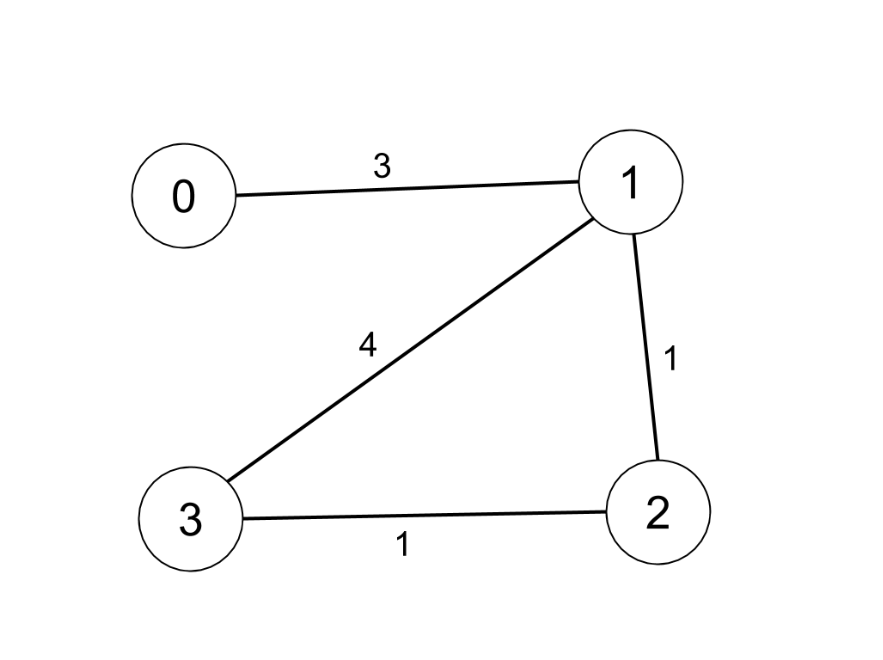
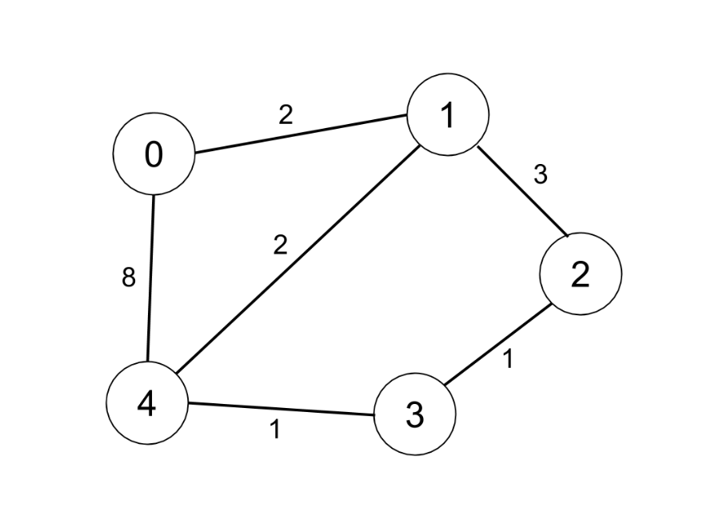

1334. 阈值距离内邻居最少的城市
n ≤ 100 直接 Floyd 求全源最短路，再逐城市数距离 ≤ threshold 的可达城市数，取最少的（并列取编号大的）。
思路
- 先建
dist矩阵：对角线 0、直达边取最小权、其余INF（取Integer.MAX_VALUE / 2，相加不溢出）。 - Floyd 三重循环枚举中转点
k：dist[i][k] + dist[k][j] < dist[i][j]就更新，跑完得到任意两点最短路。 - 逐城市数
dist[i][j] ≤ threshold的j个数（自己也是 0 ≤ 阈值，每城都多算 1，不影响比大小），cnt <= best让并列时编号大的胜出。
图解
最优解
1import java.util.*;2 3class Solution {4 public int findTheCity(int n, int[][] edges, int distanceThreshold) {5 // INF 取 int 上限一半：Floyd 相加不会溢出，又远大于任何真实距离6 final int INF = Integer.MAX_VALUE / 2;7 int[][] dist = new int[n][n];8 for (int i = 0; i < n; i++) Arrays.fill(dist[i], INF);9 for (int i = 0; i < n; i++) dist[i][i] = 0;10 for (int[] e : edges) {11 dist[e[0]][e[1]] = Math.min(dist[e[0]][e[1]], e[2]);12 dist[e[1]][e[0]] = Math.min(dist[e[1]][e[0]], e[2]);13 }14 // Floyd：枚举中转点 k，看绕 k 是否更近15 for (int k = 0; k < n; k++)16 for (int i = 0; i < n; i++)17 for (int j = 0; j < n; j++)18 if (dist[i][k] + dist[k][j] < dist[i][j]) dist[i][j] = dist[i][k] + dist[k][j];19 // 逐城市数阈值内的可达城市，取最少的；<= 让并列时编号大的胜出20 int ans = -1, best = Integer.MAX_VALUE;21 for (int i = 0; i < n; i++) {22 int cnt = 0;23 for (int j = 0; j < n; j++) if (dist[i][j] <= distanceThreshold) cnt++;24 if (cnt <= best) { best = cnt; ans = i; }25 }26 return ans;27 }28}题目
有 n 个城市，按从 0 到 n-1 编号。给你一个边数组 edges，其中 edges[i] = [fromi, toi, weighti] 代表 fromi 和 toi 两个城市之间的双向加权边，距离阈值是一个整数 distanceThreshold。
返回在路径距离限制为 distanceThreshold 以内可到达城市最少的城市。如果有多个这样的城市，则返回编号最大的城市。
注意，连接城市 i 和 j 的路径的距离等于沿该路径的所有边的权重之和。
示例 1：

输入：n = 4, edges = [[0,1,3],[1,2,1],[1,3,4],[2,3,1]], distanceThreshold = 4 输出：3 解释：城市分布图如上。 每个城市阈值距离 distanceThreshold = 4 内的邻居城市分别是： 城市 0 -> [城市 1, 城市 2] 城市 1 -> [城市 0, 城市 2, 城市 3] 城市 2 -> [城市 0, 城市 1, 城市 3] 城市 3 -> [城市 1, 城市 2] 城市 0 和 3 在阈值距离 4 以内都有 2 个邻居城市，但是我们必须返回城市 3，因为它的编号最大。
示例 2：

输入：n = 5, edges = [[0,1,2],[0,4,8],[1,2,3],[1,4,2],[2,3,1],[3,4,1]], distanceThreshold = 2 输出：0 解释：城市分布图如上。 每个城市阈值距离 distanceThreshold = 2 内的邻居城市分别是： 城市 0 -> [城市 1] 城市 1 -> [城市 0, 城市 4] 城市 2 -> [城市 3, 城市 4] 城市 3 -> [城市 2, 城市 4] 城市 4 -> [城市 1, 城市 2, 城市 3] 城市 0 在阈值距离 2 以内只有 1 个邻居城市。
提示：
2 <= n <= 1001 <= edges.length <= n * (n - 1) / 2edges[i].length == 30 <= fromi < toi < n1 <= weighti, distanceThreshold <= 10^4- 所有
(fromi, toi)都是不同的。
题面取自力扣当前版本。
数据快照 2026-11-04。题面版权归力扣所有，本站点仅供本人学习使用，请勿对外发布。